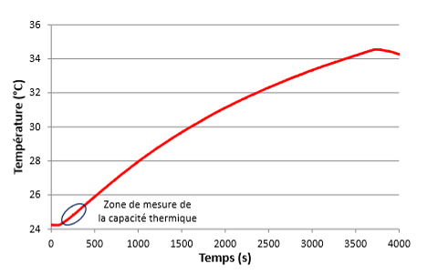

Simulation d’une batterie de véhicule électrique#
Ecrit par Marc Budinger, INSA Toulouse, France
Pack batteries du G4#
Nous allons chercher à modéliser à modéliser le pack batteries de l’utilitaire Goupil G4. Les figures suivantes localisent cette batterie de traction dans le véhicule.
Locacalisation de la batterie de traction du G4

Les caracétristiques générales de la batterie sont :
Tension nominale : 48V
Capacité : 200 Ah
Energie : 9.6 kWh
On supposere dans la suite du sujet que cette batterie est constituée de cellules LiFePO4 50Ah tels que décrite dans la thèse de [Damay, 2015]. La tension de la cellule varie entre 2.5 et 3.65 V pour une tension nominale de 3.22 V.
Locacalisation de la batterie de traction du G4
Le pack batterie est constitués de modules assemblage de ces cellules élémentaires.
Module
Question : Proposer une configuration possible pour ce pack batterie : nombre de modules, configurations des modules (\(n_s\), \(n_p\)).
Tension en fonction de l’état de charge#
Il est conventionnel de modéliser une batterie par une source de tension constante. Cette tension en circuite ouvert (OCV) varie en fonction de l’état de charge comme illustré sur la figure ci-dessous.
Show code cell source
import numpy as np
import matplotlib.pyplot as plt
Charge = [0, 4.2, 8.3, 13.7, 19.0, 24.4, 29.0, 33.6, 42.6, 45.9, 49.1, 52.1]
Tension = [2.5, 3.2, 3.21, 3.25, 3.28,3.3,3.3,3.3,3.35,3.35,3.35,3.45]
plt.plot(Charge, Tension)
plt.xlabel("SoC absolu (Ah)")
plt.ylabel("Tension (V)")
plt.grid()
plt.show() # affiche la figure à l'écran
Exercice : Proposer une modèle modélica permettant de représenter cette source de tension fonction de l’état de charge.
Resistance série et phénomène de diffusion#
Une batterie n’est également pas une source de tension parfaire : une impédance série fait varier la tension observable au borne de le cellule en cas de charge et de décharge. La figure suivante représente un la réponse en tension à un échelon de courant de charge la réponse en tension à un créneau de courant de charge (mesure effectuée(#références) sur la cellule étudiée, à environ 50 % SoC, régime C/2, 32 °C).
Réponse en tension à un créneau de courant [Damay, 2015]
Exercice : Proposer une impédance série simple et composée de résistances et condensateurs permettant de représenter la chute de tension mesurée. Identifier graphiquement les valeurs des paramètres. Valider par simulation python et Modelica.
Show code cell content
from scipy import signal
import matplotlib.pyplot as plt
# On suppose l'impedance de la forme
# --- R2 ---
# --- R1 -- -----
# --- C2 ---
# Identification
I = 25 # [A] échelon de courant
U0 = 3.31 # [V] tension circuit ouvert
DU1 = 3.335-U0 # [V] reponse instantanee
DUf = 3.382-U0 # [V] reponse finale
R1 = DU1 / I # [Ohm] impedance serie
R2 = DUf / I - R1 # [Ohm] impedance //
TauDiff = 60 # [s] constante de temps de diffusion
C2 = TauDiff / R2 # [F] capcisité de diffusion
print("R1 = %.2e Ohm"%R1)
print("R2 = %.2e Ohm"%R2)
print("C2 = %.2e F"%C2)
# fonction de transfert
Z = signal.lti([R1*TauDiff, R1+R2], [TauDiff, 1])
# Réponse temporelle à un échelon
t, y = signal.step(Z)
plt.plot(t, y*I+U0)
plt.xlabel('Temps [s]')
plt.ylabel('Amplitude')
plt.title('Réponse à un échelon')
plt.grid()
# Réponse fréquentielle, notemment à 1/20 Hz
w, mag, phase = signal.bode(Z)
plt.figure()
plt.semilogx(w/2/3.14, 10**(mag/20)*1e3) # Bode magnitude plot
plt.semilogx([1/20]*2, [min(10**(mag/20)*1e3), max(10**(mag/20)*1e3)])
plt.xlabel('Fréquence [Hz]')
plt.ylabel('Impédance (mOhm)')
plt.title('Réponse fréquentielle de l''impédance')
plt.grid()
R1 = 1.00e-03 Ohm
R2 = 1.88e-03 Ohm
C2 = 3.19e+04 F
Modélisation de la réponse thermique d’une cellule#
Les batteries LiFePO4 sont généralement conçues pour fonctionner dans une plage de température de -20 ° C à 60 ° C. Bien qu’elles aient une plage de températures de fonctionnement plus large que d’autres chimies de cellules, il est important d’analyser les température d’utilisation ou de stockage afin d’éviter :
un vieillissement accéléré: le fonctionnement d’une batterie LiFePO4 à 60°C peut entraîner une durée de vie qui ne représente que 50 à 70 % de celle attendue à 25°C.
une augmentation de l’autodécharge: par exemple, une batterie LiFePO4 stockée à 40°C peut présenter un taux d’autodécharge 2 à 3 fois plus élevé que lorsqu’elle est stockée à 25°C. Cette autodécharge accrue peut entraîner une capacité réduite de la batterie et une durée de conservation plus courte.
Pour la suite de l’étude, nous allons réaliser quelques hypothèses simpificatrices afin de simuler la réponse thermique d’une cellule :
nous négligerons les échanges de chaleur entropique par rapports aux pertes électriques (calculable par l’impédance série)
nous supposerons que le transfert de chaleur se fait principalement vers la base de la cellule et du module. Cette base pourra si necessaire etre réfroidie par un dispositif spécifique.
nous supposerons la température homogène au sein de la cellule.
Flux thermiques dans la cellule
La figure suivante représente la réponse en température de la cellule étudiée pour pour un courant carré d’amplitude +/-40A de période 20s appliqué pendant 1h.
Réponse thermique d’une cellule [Damay, 2015] 
Exercice : Proposer un modèle thermique à base de résistance et capacité thermique le plus simple possible permettant de représenter certe réponse et le problème étudié. Identifier les paramètres et valider votre modèles par simulation python et Modelica.
Show code cell content
import numpy as np
# Pour l'impedance de la forme
# --- R2 ---
# --- R1 -- -----
# --- C2 ---
# A la fréquence de 1/20 Hz, seul R1 est actif.
# On suppose donc Z=R1
# Pertes Joules
Pj=R1 * 40**2
# Identification de la capacité
# Pth = Cth DTheta / DT
DTheta=1.8 # [K]
DT = 400 # [s]
Cth = Pj/(DTheta / DT)
# Identification de la résistance par identification su réponse indicielle
# on a un 1er ordre thermique
Rth = 11
H = signal.lti([Rth], [Rth*Cth, 1])
t = np.linspace(0,3600,100)
# Réponse temporelle à un échelon
t, y = signal.step(H, T=t)
plt.plot(t, y*Pj+23.8)
plt.xlabel('Temps [s]')
plt.ylabel('Temperature [°C]')
plt.title('Réponse à un échelon')
plt.grid()
print("Cth = %.2e J/K"%Cth)
print("Rth = %.2e K/W"%Rth)
Cth = 3.56e+02 J/K
Rth = 1.10e+01 K/W
Modélisation et simulation du pack batterie complet#
Exercice : Représenter sous Modelica la cellule, les modules et les associations de module en un pack représentatif de la batterie de tractin du goupil G4. Simuler la réponse électrique et thermique de ce pack sous le profil de mission de test.
Références#
Certaines données et graphiques de ce Notebook sont issus de la thèse suivante:
[Damay, 2015] Damay, N. (2015). Contribution à la modélisation thermique de packs batteries LiFePO4 pour véhicules décarbonés (Doctoral dissertation, Université de Technologie de Compiègne). Link
Mais il est a noter que le présent document a effectué de nombreuses hypthèses simplificatrices pour des raisons pédagogiques. Les résultas présentés ici ne sont donc pas l’image de l’amplitude du travail de [Damay, 2015].